Alltag & Sexualität
Rückmeldung
Einleitung
Vielen Dank für Ihre Teilnahme an unserer Studie. Es folgt nun Ihre persönliche Rückmeldung. Bitte beachten Sie, dass die Auswertung automatisch erfolgt ist. Die Analysen und Grafiken basieren auf Ihren Aussagen über die vergangenen 70 Tage hinweg. 70 Tage sind keine kurze Zeit, aber bitte beachten Sie trotzdem die folgenden Hinweise:
- Zufallsfehler können Muster verursachen, die hier recht deutlich aussehen, aber doch nicht bedeuten, dass es bei Ihnen immer so abläuft. Genau so wie der menschliche Blick Figuren in den Wolken findet, finden wir auch manchmal Muster in den Punktwolken Ihrer Daten, die keine überdauernde Bedeutung haben
- Sie sind die Expertin für die Interpretation Ihrer Daten, nicht wir. Deswegen bieten wir viele Daten ohne Interpretation dar.
- Wenn ein Muster für Sie überhaupt keinen Sinn ergibt, dann ist es in vielen Fällen wohl wahrscheinlicher, dass statistische Zufallsfehler zugeschlagen haben, unsere Operationalisierungen von komplexen psychischen Abläufen zu kurz gegriffen haben, die vergangenen 70 Tage einfach ungewöhnlich waren, oder dass entscheidende konfundierende Faktoren unberücksichtigt blieben.
- Erhoben haben hier rein korrelative Daten, die auf Ihren Selbstberichten basieren. In solchen Fällen sollte nur mit enormer Vorsicht eine kausale Interpretation erfolgen. Vielleicht kennen Sie die wahren Gründe selbst, aber unsere Entscheidungen eine Variable auf die X-Achse (waagerecht) oder Y-Achse (senkrecht) einer statistischen Grafik zu legen, haben hierfür wenig zu bedeuten.
- Diese Rückmeldung ist technisch recht komplex zu erstellen. Falls Ihnen Fehler auffallen, oder Sie sich Informationen wünschen, die bislang fehlen, zögern Sie nicht, sich direkt an uns zu wenden.
Sie können nun wie folgt Ihre Rückmeldung für die verschiedenen Bereiche lesen: Oben sehen Sie die groben Oberkategorien der Rückmeldung. Wenn Sie auf eine klicken, gelangen Sie zu mehr Erklärungen und den Grafiken, sowie weiteren Erklärungen.
Ihre Persönlichkeit
Big 5 Persönlichkeit
Die Big Five oder auch, eng verwandt, das Fünf-Faktoren-Modell (FFM), ist ein Modell der Persönlichkeitspsychologie, nach dem sich Persönlichkeit in fünf Hauptdimensionen zusammenfassen lässt. Neurotizismus (hier im Gegenpol: emotionale Stabilität), Extraversion, Offenheit für Erfahrungen, Verträglichkeit und Gewissenhaftigkeit. Werte auf diesen Dimensionen dienen als relativ sparsame Zusammenfassung der Arten und Weisen, in denen sich Menschen unterscheiden.

Ihre Extraversion
Die Dimension Extraversion beschreibt Aktivität und zwischenmenschliches Verhalten. Sie wird auch Begeisterungsfähigkeit genannt und ist der Introversion gegenübergestellt. Personen mit hohen Extraversionswerten sind gesellig, aktiv, gesprächig, personenorientiert, herzlich, optimistisch und heiter.
Sie sind zudem empfänglich für Anregungen und Aufregungen. Introvertierte Personen sind zurückhaltend bei sozialen Interaktionen, gerne allein und unabhängig. Sie können auch sehr aktiv sein, aber weniger in Gesellschaft.

Sie sind sehr introvertiert.
Ihre Gewissenhaftigkeit
Personen mit hohen Gewissenhaftigkeitswerten handeln organisiert, sorgfältig, planend, effektiv, verantwortlich, zuverlässig und überlegt. Gewissenhafte Menschen sind sich der Verantwortung ihrer Aufgaben bewusst und arbeiten zielstrebig und entschlossen auf ihre Ziele hin.
Unter den 5 Hauptfaktoren der Persönlichkeit sagt selbstbeurteilte Gewissenhaftigkeit das Vorgesetztenurteil über den Berufserfolg am besten vorher. Personen mit niedrigen Gewissenhaftigkeitswerten handeln unsorgfältig, spontan und ungenau, gelten auch eher als gelassen und weniger leistungsmotiviert. Sie haben ein geringeres Risiko für Perfektionismus und Zwanghaftigkeit. Sie reden offener über Sex, schnallen sich seltener an und nehmen eher Anhalter mit. Sie neigen auch mehr zu Tagträumen und Prokrastination.
Sie sind eher wenig gewissenhaft.
Ihre Verträglichkeit
Ein zentrales Merkmal von Personen mit hohen Verträglichkeitswerten ist ihr Altruismus. Sie begegnen anderen mit Verständnis, Wohlwollen und Mitgefühl, sie sind bemüht, anderen zu helfen, und überzeugt, dass diese sich ebenso hilfsbereit verhalten werden. Sie neigen zu zwischenmenschlichem Vertrauen, zur Kooperation und zur Nachgiebigkeit.
Personen mit niedrigen Verträglichkeitswerten beschreiben sich im Gegensatz dazu als antagonistisch, egozentrisch und misstrauisch gegenüber den Absichten anderer Menschen. Sie verhalten sich eher kompetitiv (mit anderen in den „Wettstreit“ tretend) als kooperativ. Somit scheint die verträgliche Seite der Dimension eindeutig sozial erwünschter zu sein. Dennoch darf nicht vergessen werden, dass die Fähigkeit, für eigene Interessen zu kämpfen, in vielen Situationen hilfreich ist. So ist Verträglichkeit im Gerichtssaal nicht unbedingt eine Tugend.

Sie sind durchschnittlich verträglich.
Ihre Offenheit für neue Erfahrungen
Mit dieser Eigenschaft werden das Interesse und das Ausmaß der Beschäftigung mit neuen Erfahrungen, Erlebnissen und Eindrücken zum Ausdruck gebracht.
Personen mit hohen Offenheitswerten geben häufig an, dass sie ein reges Fantasieleben haben, ihre positiven und negativen Gefühle deutlich wahrnehmen sowie an vielen persönlichen und öffentlichen Vorgängen interessiert sind. Sie beschreiben sich als wissbegierig, intellektuell, fantasievoll, experimentierfreudig und künstlerisch interessiert. Sie sind eher bereit, bestehende Normen kritisch zu hinterfragen und auf neuartige soziale, ethische und politische Wertvorstellungen einzugehen. Sie sind unabhängig in ihrem Urteil, verhalten sich häufig unkonventionell, erproben neue Handlungsweisen und bevorzugen Abwechslung.
Personen mit niedrigen Offenheitswerten neigen demgegenüber eher zu konventionellem Verhalten und zu konservativen Einstellungen. Sie ziehen Bekanntes und Bewährtes dem Neuen vor und sie nehmen ihre emotionalen Reaktionen eher gedämpft wahr.

Sie sind durchschnittlich offen für neue Erfahrungen.
Ihre emotionale Stabilität
Dieses Konstrukt spiegelt individuelle Unterschiede im Erleben von negativen Emotionen wider und wird von einigen Autoren auch als emotionale Labilität oder Neurotizismus bezeichnet.
Emotional labile Personen erleben häufiger Angst, Nervosität, Anspannung, Trauer, Unsicherheit und Verlegenheit. Zudem bleiben diese Empfindungen bei ihnen länger bestehen und werden leichter ausgelöst. Sie tendieren zu mehr Sorgen um ihre Gesundheit, neigen zu unrealistischen Ideen und haben Schwierigkeiten, auf Stresssituationen gelassen zu reagieren. Emotional stabile Personen sind eher ruhig, zufrieden, stabil, entspannt und sicher. Sie erleben seltener negative und häufiger positive Gefühle.
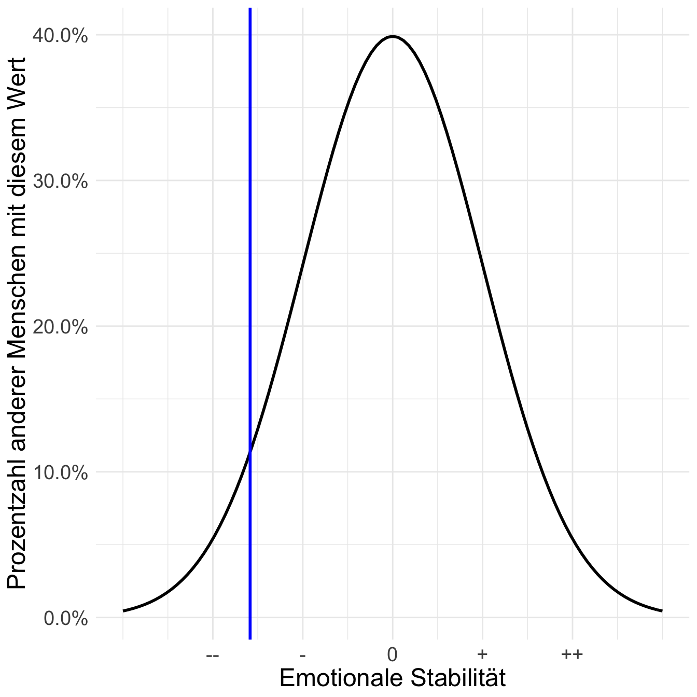
Sie sind eher emotional labil.
Ihr Zyklus
Einleitung
Hier stellen für Sie grafisch dar, wie sich Ihre Berichte über Ihren Zyklus hinweg verändert haben. Unten sehen Sie noch eine erklärende Grafik zum typischen Zyklus.
Einige Einschränkungen wollen wir aber vorwegschicken:
- In unserer Forschung betrachten wir gleichzeitig hunderte und tausende Zyklen von vielen verschiedenen Frauen. Sie haben (im Normallfall) nur zwei Zyklen zu unserer Studie beigetragen. Deshalb sollten Sie die Ergebnisse hier nur unter Vorsicht interpretieren.
- Manche Frauen haben kürzere und längere Zyklen als andere. Falls Ihre Zykluslänge deutlich kürzer oder länger ist als die anderer Frauen (im Mittel ungefähr 29 Tage), dann ist das fertile Fenster (in blau) vielleicht nicht richtig positioniert.
- Wir zählen die Tage vom Beginn der letzten Menstruation rückwarts. Dies tun wir, weil die luteale Phase (ab dem Eisprung zur Menstruation) weniger variabel über Frauen und Zyklen ist. Dies bedeutet, dass Daten am Ende des Tagebuchs teils nicht mit einfließen können (deswegen gibt es unsere Nachbefragung).
- Es gibt beträchtliche Unsicherheiten bei der Schätzung der Position des fertilen Fenster (der fruchtbaren Tage). Im statistischen Mittel können wir damit umgehen, aber Sie sollten Ihre Daten mit Vorsicht interpretieren, insbesondere wenn Ihr Zyklus eher unregelmäßig ist.
- Da Sie laut Ihren Angaben nicht hormonell verhüten und regelmäßig menstruieren, ovulieren Sie wahrscheinlich in den meisten Zyklen. In unserer Forschung haben wir bislang gefunden, dass hormonell verhütende Frauen im grünen Fenster sich selbst nicht signifikant anders erleben als sonst.
- Die hier dargestellten Grafiken benötigen eine gewisse Mindestmenge an Daten. Da wir nicht alle Fragen jeden Tag gestellt haben, um Ihre Zeit zu schonen, kann es, insbesondere wenn Sie nicht sehr regelmäßig teilgenommen haben, zu Fehlern bei der Grafikerstellung und/oder wirren Mustern kommen.
der Menstruationszyklus

Zyklus
Stimmung
Im Tagebuch: “Meine Stimmung war gut.”
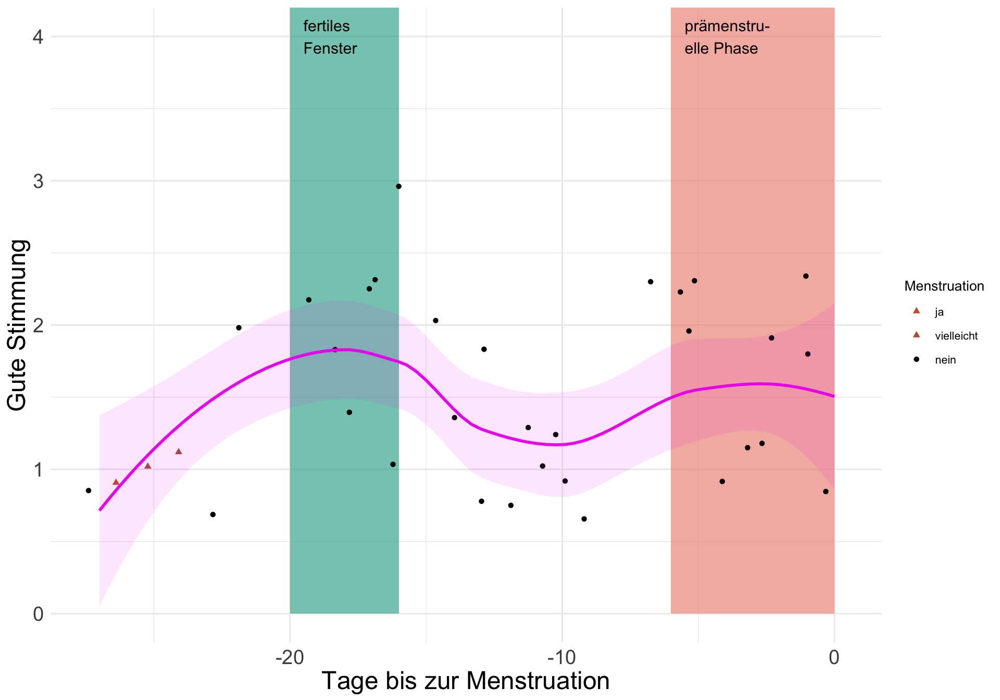
Selbstwertgefühl
Im Tagebuch: “Ich war zufrieden mit mir.”

Beziehungszufriedenheit
Im Tagebuch: “Ich war zufrieden mit meiner Beziehung.”
.

Stress
Im Tagebuch: “Ich war gestresst.”
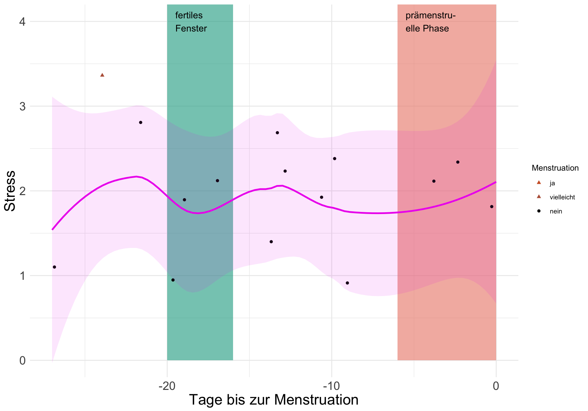
Reizbarkeit
Im Tagebuch: “Ich war leicht reizbar.”

Einsamkeit
Im Tagebuch: “Ich war einsam.”

Attraktivität
Im Tagebuch drei verschieden Aussagen zu Ihrem Aussehen:
“Ich war mit meinem Aussehen zufrieden.” “Ich habe mich gerne im Spiegel angeschaut.” “Ich habe meinen Körper gerne angeschaut.”

Libido & Sex
Libido
Im Tagebuch: “Ich hatte eine hohe Libido.”

Initiation
Im Tagebuch “Ich habe sexuelle Handlungen mit meinem Partner initiiert.”
.

Im Tagebuch “Mein Partner hat sexuelle Handlungen mit mir initiiert.”
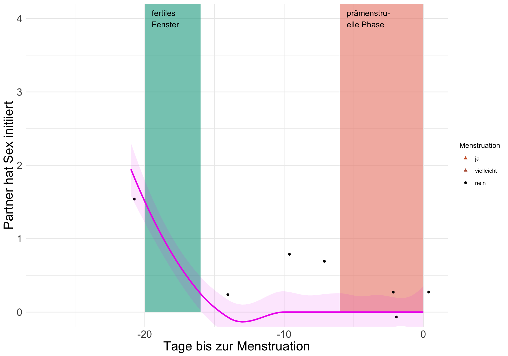
Hingezogen zu Partner
Gemittelt über 13 ähnliche Fragen, die Ihnen im Laufe des Tagebuchs gestellt wurden.
.
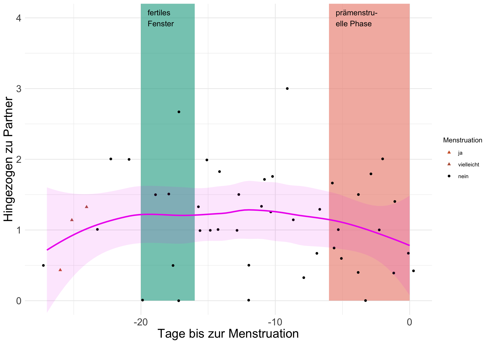
Hingezogen zu anderen Männern
Gemittelt über 13 ähnliche Fragen, die Ihnen im Laufe des Tagebuchs gestellt wurden.

Schlaf
Im Tagebuch: “Mein Schlaf letzte Nacht war gut.”
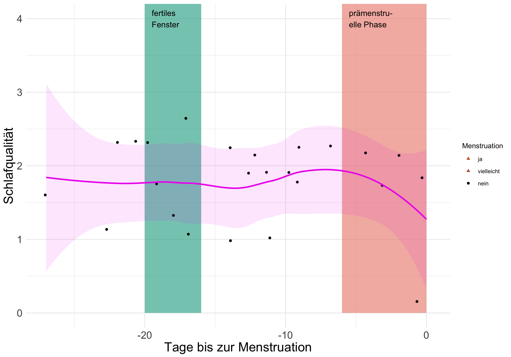
Im Tagebuch: “So viel habe ich letzte Nacht geschlafen.” (mehr/weniger als sonst)

Im Tagebuch: “Von wann bis wann haben Sie geschlafen?” (Angabe der Uhrzeiten)
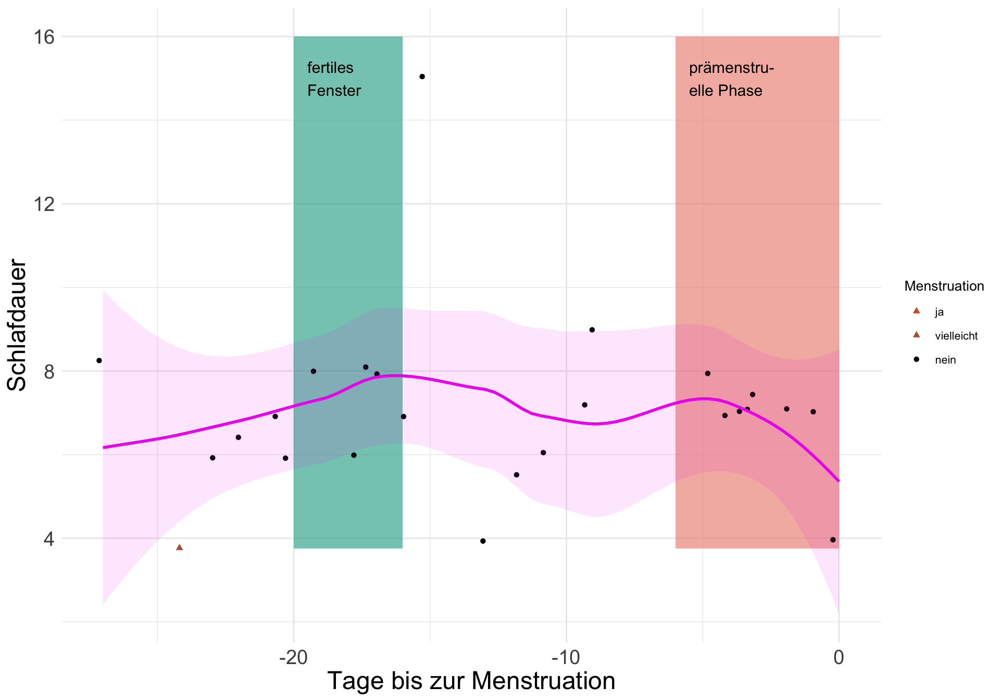
Ihr Schlaf
Schlaf und Alkohol

Schlaf und Stimmung
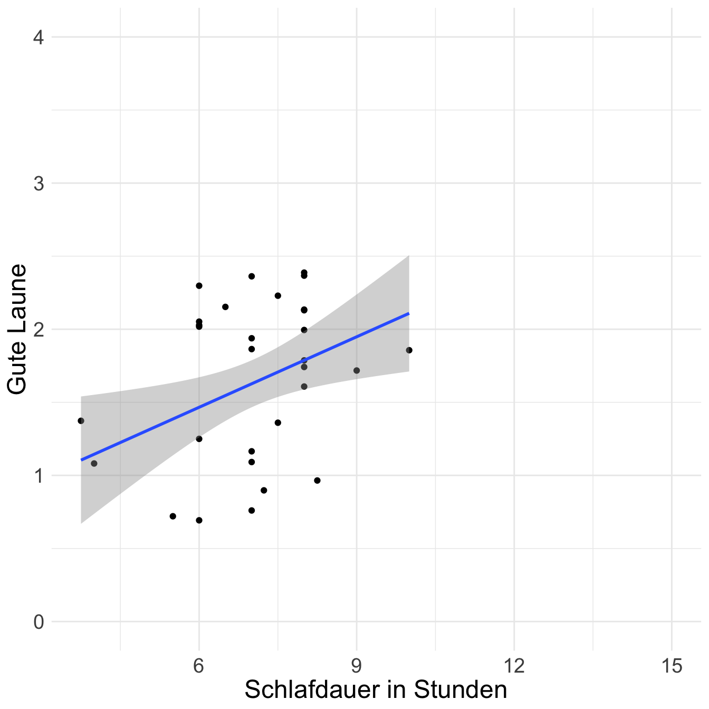
Schlaf und Libido

Ihre Stimmung in Abhängigkeit von
…Ihrem Alkoholkonsum
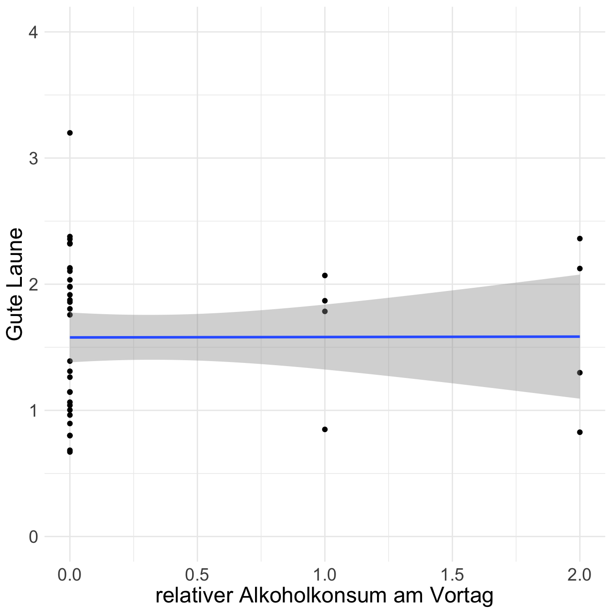
…Ihrem Zigarettenkonsum
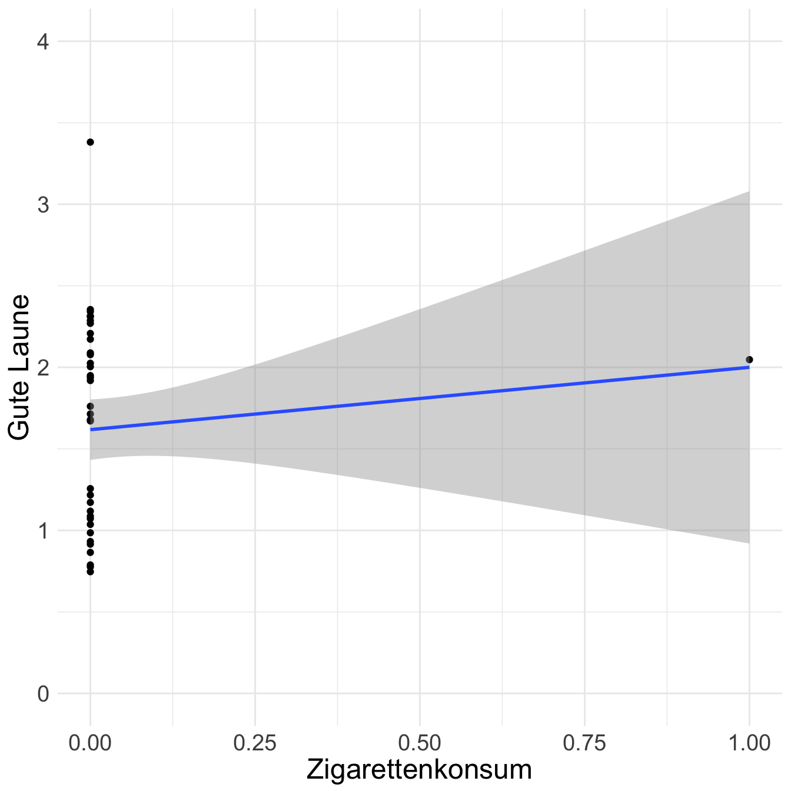
Ihre Zeit
Ihre Stimmung über die Zeit hinweg
Hier haben wir sehr viel Informationen an einem Ort zusammengetragen. In der untenstehenden Grafik sehen Sie, wie Ihre Stimmung über die Zeit hinweg war. Wir haben versucht es mit einer Linie zusammenzufassen, aber das ist bei einem kurzen Zeitraum und wenig Daten nicht gut statistisch abgesichert.
Sie sehen kleine Punkte und Quadrate. Wenn Sie mit der Maus rechts von Quadraten entlang fahren, können Sie die Notizen lesen, die Sie sich an diesem Tag gemacht haben. Bei den Punkten haben Sie sich keine Notizen gemacht. Aus technischen Gründen mussten wir leider sehr lange Notizen abkürzen.
Die Angaben, die Sie gemacht haben, haben Werte von 0, 1, 3, und 4, wobei 0 “weniger als sonst” und 4 “mehr als sonst” hieß. Wir haben die Werte ein wenig voneinander wegbewegt, damit Sie sie besser sehen können, diese kleinen Schwankungen haben aber nichts zu bedeuten.
Die Kürzel neben Ihren Notizen beziehen sich auf folgende Felder: N: Notizen am Ende des Fragebogens G: Menschen, die Sie getroffen haben D: Menschen, an die Sie gedacht haben S: Notizen zu Ihrem Sozialleben
Wochentage
Hier sehen Sie die Mittelwerte verschiedener Variablen noch einmal nach Wochentag aufgeschlüsselt.
Ihre Stimmung
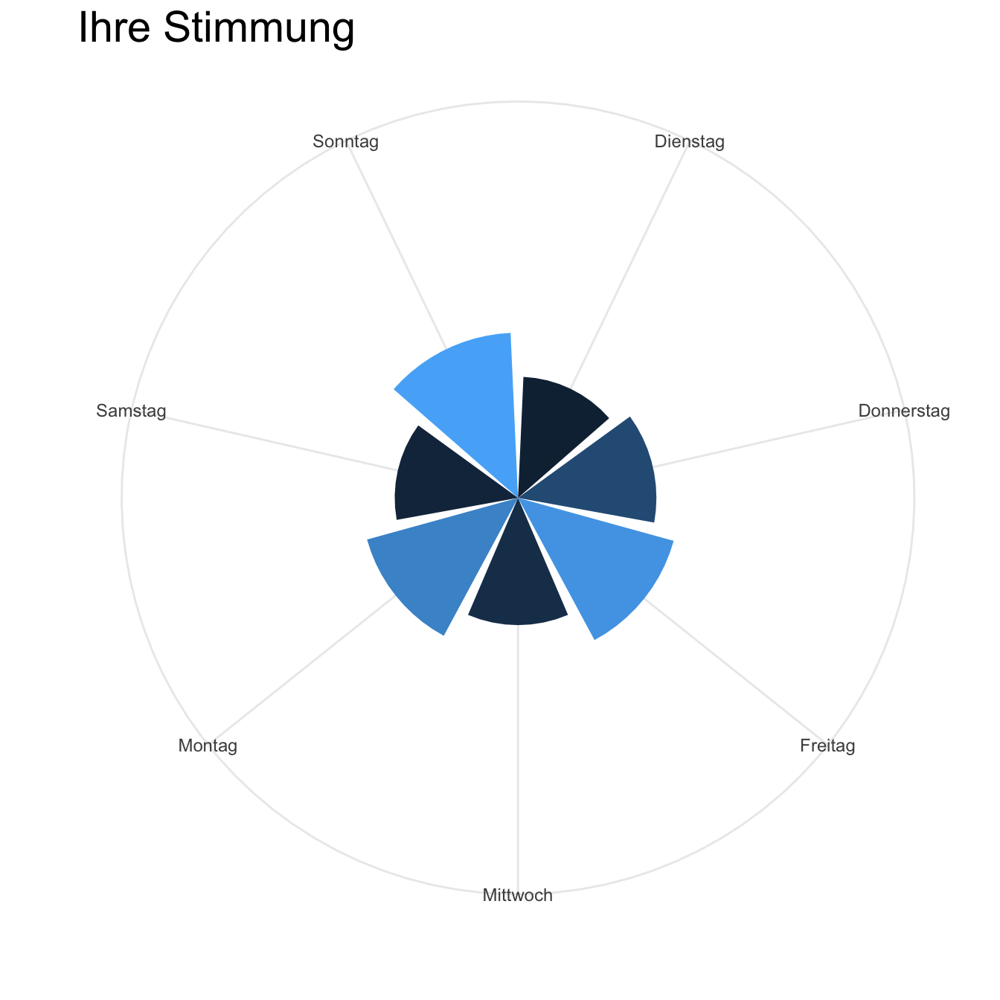
Ihr Selbstwertgefühl

Ihre Reizbarkeit

Ihr Stress
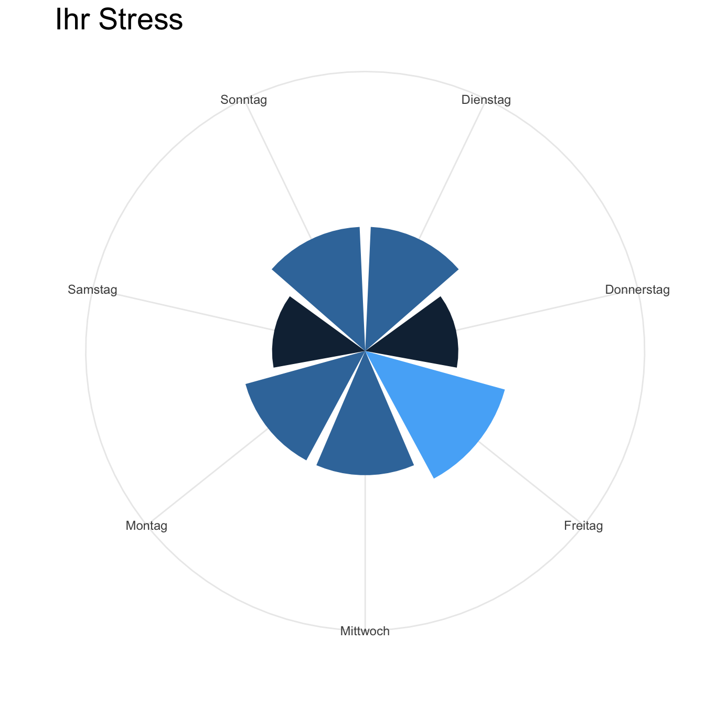
Ihre Libido
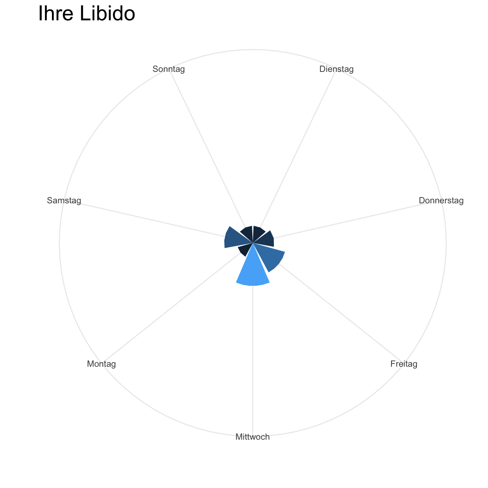
Ihre Attraktivität